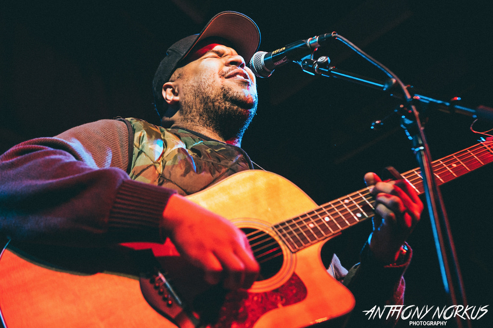
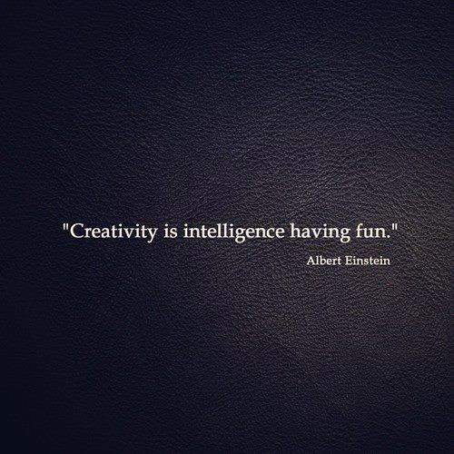
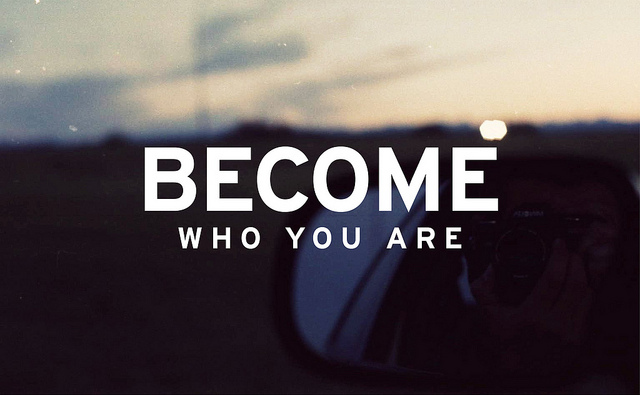

Duke's DBC Blog
I'm a guy who writes stuff like songs and rhymes and blog posts. I can sing and juggle (kind of) and my daughter thinks I'm hilarious. When I'm not being a dad or a performer, I handle social media, journalism, purchasing and project management duties for a small communications firm in West Michigan.
For me, Dev Bootcamp represents a chance to rewire my thinking. A lifetime fixed-mindset adherent, I'm trying to learn how to love learning, for all its bumps and sharp edges. I'm trying to love failure. And I'm trying to love feedback. Please let me know what I've done well. Or let me know what I screwed up, so I can grow from the experience.
This isn't my real blog. At least, not yet. One day I might buy a better domain name and turn this into something more glorious. Until then, I'm letting Wordpress do the grunt work for me, and focusing on the words. I update regularly about Dev Bootcamp stuff and my own learning/thinking process in hopes that someone may relate and take away something meaningful. Click the "Press Me" link in the header to read my other set of words.
PREVIOUS POSTS:
[none]
Remembering What Counts

It's 1:40 in the morning and two dozen strangers' hands are waving in my sweaty face. My legs hurt. My throat is raw. My wallet is empty. And the lights are too low and the beat is too loud and the bar is all out of free popcorn and I'm the happiest I've ever been.
I can't describe how good it feels to walk off stage after a performance I've nailed and hear someone tell me I nailed it. It's a feeling I've been chasing since I was a little kid, and I've shaped most of my life around music as a result. I'm a natural performer with a curious heart, and my work in folk and hip-hop is my way of scratching this permanent itch I have for serenity in the spotlight. My values - Music, Creativity, Excellence, Recognition, and Self-Knowledge - have driven me to become the man I am today.
But those values also drove me toward a hobby that rewards passion with pennies, a "career" involving gigs that pay just enough to make me wish I had more time to spend playing gigs. While I chased music, my other priorities slowly suffered until I woke up one day and realized that my life's love would have to take a brief backseat to pragmatism if I wanted the financial freedom to avoid selling my guitar. Now I'm trying to change gears, get more responsible, figure out a career, support a family. You know, adult stuff.
So how can I take my deepest values and apply them offstage, out of the spotlight? For me, the answer involves setting solid priorities. When I examine my values, the ones I live up to most often are Creativity and Self-Knowledge, with Recognition coming in at a very close third. I'm always looking for clever and creative solutions to problems, coming up with little games to pass the time and trying to figure out why I love the music and art I love, and how it was made, so I can create more stuff like it. I'm always creating. And the process is introspective, so I'm always trying to know myself better, too.

I think I wear my creative drive on my sleeve, because I regularly get asked for songwriting advice from peers in the local scene. I don't always know what to say, but every time I'm asked, it feels like recognition of the quality of my work and reinforcement of my choices up to that point. I think it's a sign that I should continue to pursue creative goals, because my creativity is what others seem to see shine through most. That's why coding caught my eye - it looks like an area where people are constantly dreaming up better and more elegant solutions to life's problems. It's like songwriting for society. And I want in.
But even as I knock on the door, I look at my knuckles and wonder if an employer will think they're the wrong color. I look at the industry and worry that I might be the wrong color. And I get scared, because I remember times in my life when I slacked off because I knew the people around me didn't expecting better from me. I don't want to stoop to anyone's expectations anymore - the stakes have gotten way too high. But recognizing the fear is a good sign, because I'm at least detecting the stereotype threat. To counteract it, I'll need to start a few new habits.
My first new habit is to set aside time each morning to remember the times in my life when I was happiest and remind myself of all the good things I did in order to reach that feeling, all the hard work and focus that went into my successes. This calibrates my brain to look for more opportunities to do today's necessary hard work. My second habit is to listen to new music every day. It's like an acknowledgement to myself that I don't have to become unmusical just because I'm focusing on other things at the moment. Finally, I'm becoming more comfortable with the idea that my thoughts aren't facts. All the self-doubt, the worry, the assumptions about how hard the next task will be...it's all just electricity firing in my brain and it has nothing to do with my actions in the moment. I don't have to give the same credence to my negative self-talk that I give to my inner cheerleader. I get to decide to be positive, every day.

It all boils down to mindfulness. On the days when I take at least five minutes to sit with my breath, I have more energy and clarity. And I think more deeply about the threads that connect my small experience with everyone and everything else in the world. That takes a lot of the pressure off! I don't have to do everything perfectly, because every moment is perfect in its own way whether I'm there for it or not. And this last point keeps me from twisting my values of Excellence and Recognition into the demons of Perfectionism and Social Anxiety.
Blogging helps too. Every time I pour myself out onto the keyboard, I feel like a weight has been lifted and I don't have to carry so much in my head all the time. So this isn't a post. It's an awakening, like all the other awakenings, and I'll continue to Create them until I'm all out of breath. Until my fingers are raw and my face is sweaty and I'm the happiest I've ever been.